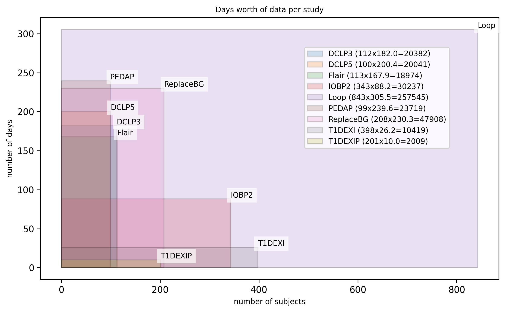

Supported Datasets
As part of the BabelBetes project, we conducted a survey of publicly available diabetes CGM and insulin pump datasets — see janvv/awesome_diabetes_cgm_csii_datasets for the full list. BabelBetes currently normalizes 9 datasets from the JAEB database.

Figure: Days worth of complete data including CGM, basal and bolus data for supported studies. Overall, we have approximately normalized and extracted half a million days of data.For each of these studies, we've spent hundreds of hours analyzing the data to ensure that the class correctly loads and extracts the data. Please refer to the individual study pages for a summary of the analysis and findings. While we operated with great care, some assumptions had to be made and other details remain unknown, which are also documented.
| Analysis & Documentation | Link | Supported Version/Retrieval Date | Folder Name * | Note |
|---|---|---|---|---|
| Flair | JAEB | -/April 17th, 2024 | FLAIRPublicDataSet.zip | ⚠️We don't support the newest version (September, 2024) where insulin pump data was removed from the dataset. |
| DCLP3 | JAEB | Release 3 / 2022-08-04 | DCLP3 Public Dataset - Release 3 - 2022-08-04.zip | - |
| DCLP5 | JAEB | -/April 17th, 2024 | DCLP5_Dataset_2022-01-20-5e0f3b16-c890-4ace-9e3b-531f3687cf53.zip | - |
| IOBP2 | JAEB | -/April 17th, 2024 | IOBP2 RCT Public Dataset.zip | - |
| PEDAP | JAEB | Release 4/2025-04-10 | PEDAP Public Dataset - Release 4 - 2025-04-10.zip | Our investigation resulted in two updated versions: Release 3 (updated patient ids), Release 4 with complete basal data. |
| T1DEXI | JAEB | -/October 1st, 2022 | T1DEXI - DATA FOR UPLOAD.zip | |
| T1DEXIP | JAEB | -/March 16th, 2023 | T1DEXIP - DATA FOR UPLOAD.zip | |
| REPLACE BG | JAEB | -/February 2nd, 2025 | REPLACE-BG Dataset-79f6bdc8-3c51-4736-a39f-c4c0f71d45e5 | ⚠️The currently hosted version misses the Basal file. |
| Loop | JAEB | 2023-01-31 | Loop study public dataset 2023-01-31.zip | Due to the extensive file sizes, we convert the CSV files to parquet files in a temporary folder to allow parallel processing. You can delete this folder afterwards. |
* We have only tested our code on the respective versions.
If you are encountering problems with running the datasets, feel free to reach out to us.